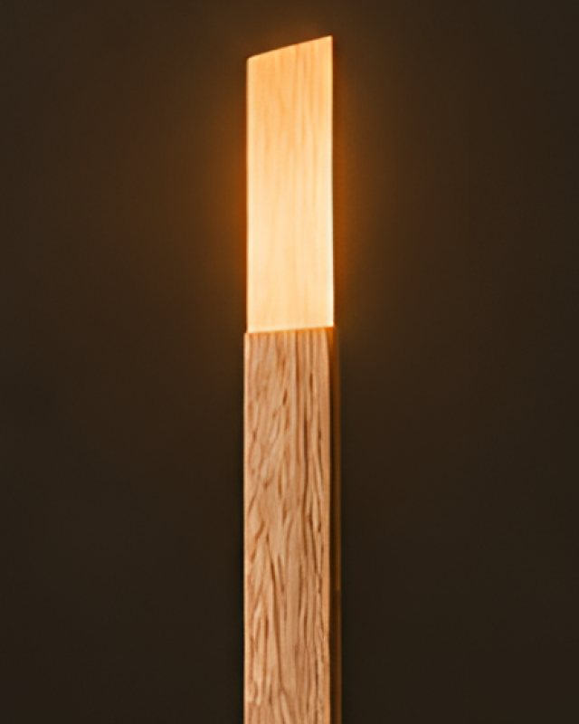
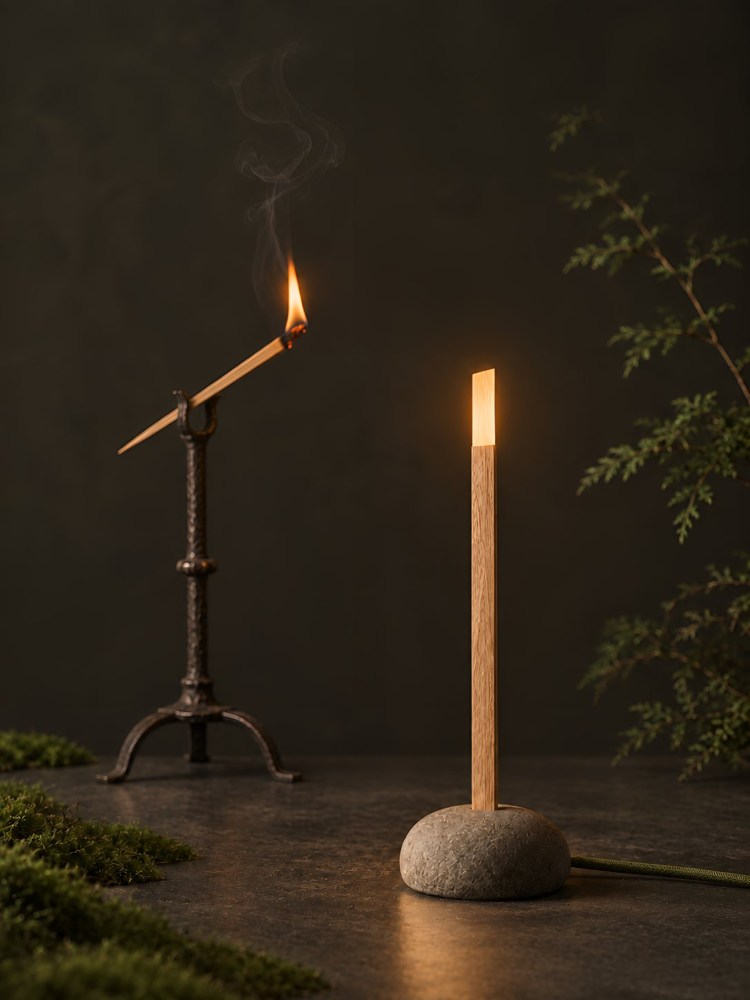
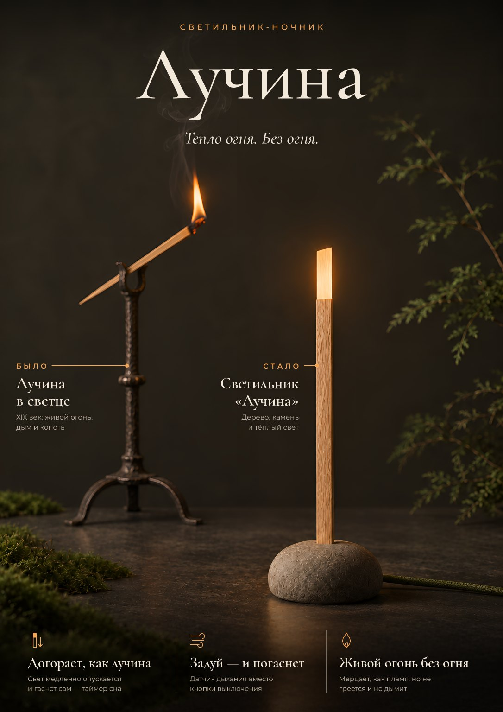
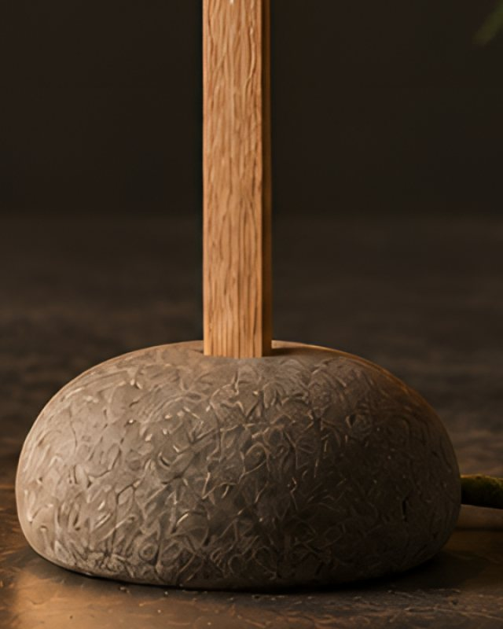
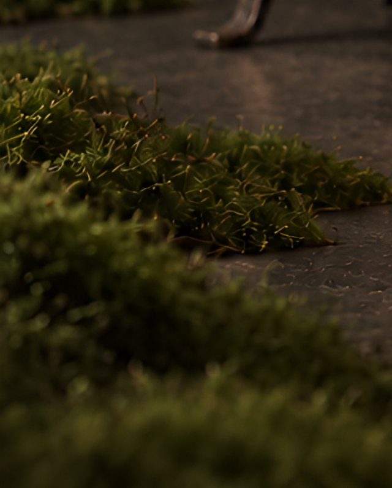

Дерево
Планка из массива дуба. Кончик сделан тоньше, поэтому свет проходит сквозь древесину и выглядит тёплым.

Чиркните по планке, чтобы зажечьпроведите вверх по светильнику — или нажмите кнопку
Тогда
Тонкая щепка, живой огонь — и дым под самый потолок.
Двести лет назад так освещали избу. Лучину зажимали в железный светец, а под неё ставили корытце с водой для угольков. Горела она недолго, коптила стены и требовала присмотра.
Сейчас
Мы сохранили её тепло. А огонь — убрали.
Тонкая дубовая планка светится изнутри тёплым светом. Каменная подставка держит её и заряжает. Ни дыма, ни копоти — только знакомое мерцание.
Попробуйте сами
Чиркните по планке вверх — загорится. Проведите вдоль неё — свет станет ярче или тише.
Новый светильник-ночник
Светит, как лучина. Догорает, как лучина. Гаснет, если задуть. Только без дыма, копоти и огня.

Как это работает
От первого огонька до утра — без единой кнопки.
Проводите пальцем вверх по планке, как спичкой по коробку. Кончик разгорается тёплым светом.
Жест «чиркнуть»Ведёте пальцем вдоль планки: вверх — ярче, вниз — тише. Свет всегда тёплый, как от огня.
ЯркостьВключаете таймер на 15, 30 или 60 минут. Свет медленно опускается по планке и тускнеет.
Догорает, как лучинаВы уже спите, а «Лучина» тихо погасла. Не нужно вставать и искать выключатель.
Без кнопокДостаньте планку из камня — она светит и в руке, как маленький фонарик. Дорогу до кухни видно.
Можно взять с собойПоставьте планку обратно — кольцо вокруг прорези мягко засветится, пока идёт зарядка.
Камень-зарядкаИз чего сделана
Природные материалы и цвета — те же, что у настоящей лучины в избе.

Планка из массива дуба. Кончик сделан тоньше, поэтому свет проходит сквозь древесину и выглядит тёплым.

Тяжёлая каменная подставка: светильник не опрокинется. Внутри — зарядка для планки.

Текстильный шнур цвета мха и спокойная природная палитра — светильник не спорит с интерьером.
Коротко
Спокойной ночи